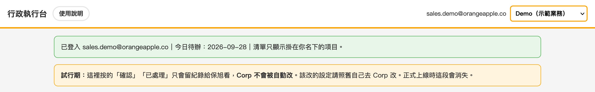
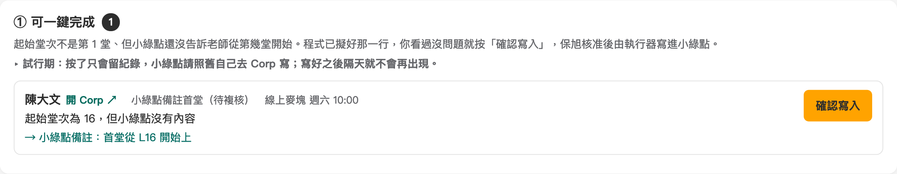
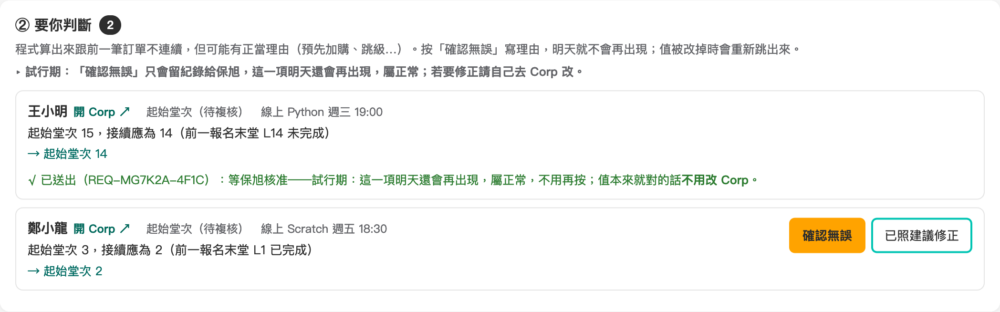
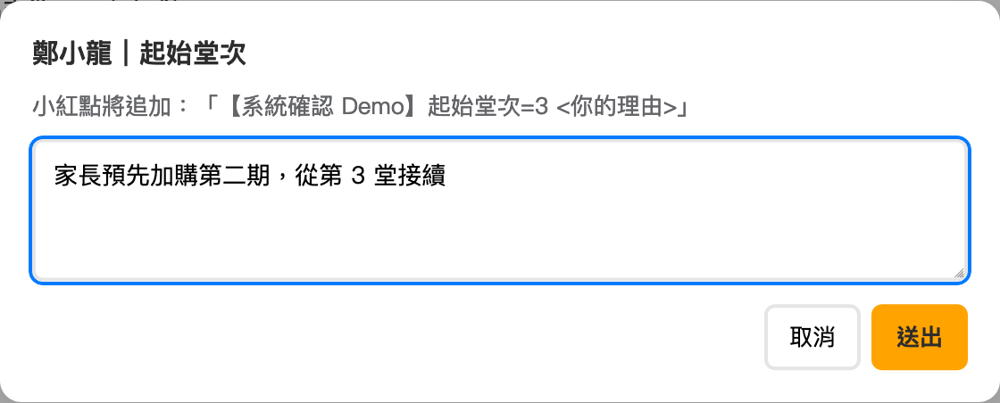
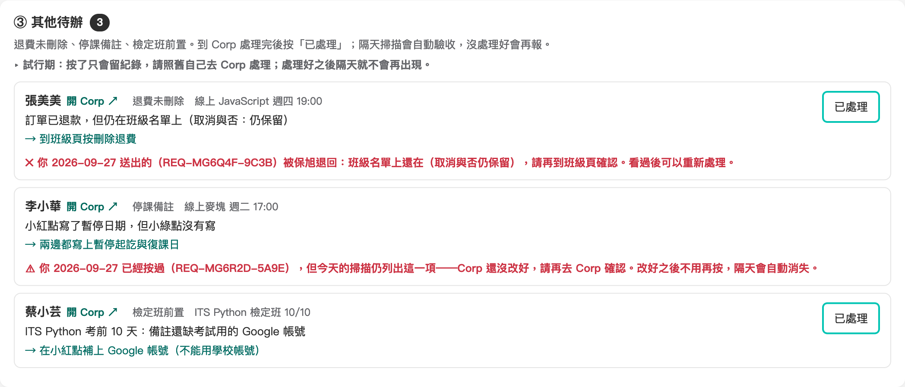
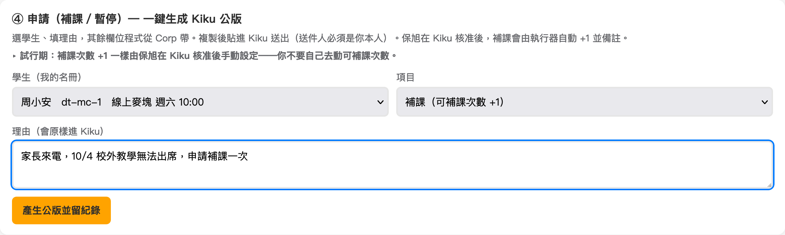
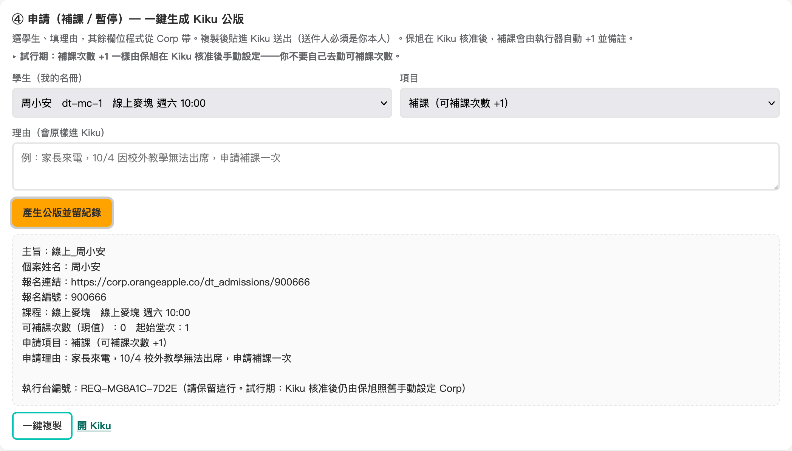
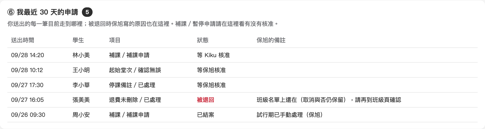

每天早上系統會把你名下所有報名掃過一遍，把「該處理的事」列給你。你在執行台按一下留紀錄，保旭核准。這份手冊講你那一端怎麼用。
https://poshlin.github.io/oa-schedule/admin.html，建議加入書籤。
起始堂次不是第 1 堂，但小綠點還沒告訴老師從第幾堂開始上。系統已經擬好那一行。

起始堂次跟前一筆訂單接不起來。可能是設錯，也可能有正當理由（預先加購、跳級）。

| 情況 | 你按什麼 |
|---|---|
| 值是對的（有正當理由） | 確認無誤 寫理由，例如「家長預先加購第二期」 |
| 值是錯的 | 點「開 Corp」改成建議的值，再按 已照建議修正 |
| 系統預建、還沒設定 | 到 Corp 把起始堂次設好，再按 已處理 |

這些事系統沒辦法幫你做，要你到 Corp 處理。

隔天早上的掃描如果不再列出這一項，就完成了。還列著的話會變成紅字，代表 Corp 還沒改好，要再去看一次。
不用再自己一格一格填 Kiku。選學生、寫理由，其他欄位系統從 Corp 帶。


系統新加的檢查項目會先出現在這裡。照說明到 Corp 處理，再按「已處理」。

| 狀態 | 意思 |
|---|---|
| 等保旭核准／等 Kiku 核准 | 送到了，還沒審 |
| 保旭已核准 | 同意了（試行期 Corp 仍要照舊自己改） |
| 已完成 | 系統已經寫進 Corp（正式上線後才會有） |
| 被退回 | 看右邊「保旭的備註」，改好之後可以重新送出 |
| 已結案 | 保旭自己處理完了（例如他已經手動 +1） |
| 項目下面出現 | 意思與下一步 |
|---|---|
| ✓ 已送出（REQ-…）：等保旭核准 | 送到了。按鈕會收起來，不用再按 |
| ✕ 被保旭退回：原因 | 看原因、改好，按鈕會重新出現，可以再送一次 |
| ⚠ 你已經按過，但今天的掃描仍列出這一項 | Corp 其實還沒改好，回 Corp 再確認 |
| ▸ 保旭已結案，但今天的掃描仍列出這一項 | 如果還需要處理，重新送出 |
| 跳出「這一項之前已經有人送過」 | 同一項已經有一張單在處理，這次不會重複建立。內容要改，請保旭先把舊單退回 |
| 跳出「送出失敗：伺服器暫時沒有回正常資料」 | 再按一次就好，重按不會重複建立 |
| 橫幅 | 怎麼辦 |
|---|---|
| 綠色：已登入…今日待辦：今天日期 | 正常，開始處理 |
| 紅色：今日待辦是空的／是某天的（不是今天） | 今天早上的掃描沒完成。這天照舊自己到 Corp 處理，並告訴保旭 |
| 紅色：對不到業務名單，請在右上角選你是誰 | 右上角選你自己 |
| 紅色：資料裡混到不同日期 | 系統正在更新，一分鐘後按 Cmd+Shift+R 重新整理 |
| 黃色：…N 班沒掃到 | 那幾班的學生今天不在清單上，照舊自己留意 |
| 問題 | 回答 |
|---|---|
| 看不到自己的清單 | 確認用公司帳號登入、右上角選對人，再按 Cmd+Shift+R 重新整理 |
| 按錯了 | 請保旭退回那一張，再重新處理 |
| 為什麼試行期還要自己改 Corp？ | 系統在「預演」：它會先讀 Corp、算出本來要怎麼改，確認都正確後才開自動寫入 |
| 理由要寫多詳細？ | 一句話講清楚原因就好，例如「家長預先加購第二期」。保旭看的是這一句 |
保旭會通知你「明天起」開始。從那天起：
切換那天請先按 Cmd+Shift+R 重新整理，試行期的黃色橫幅會消失。